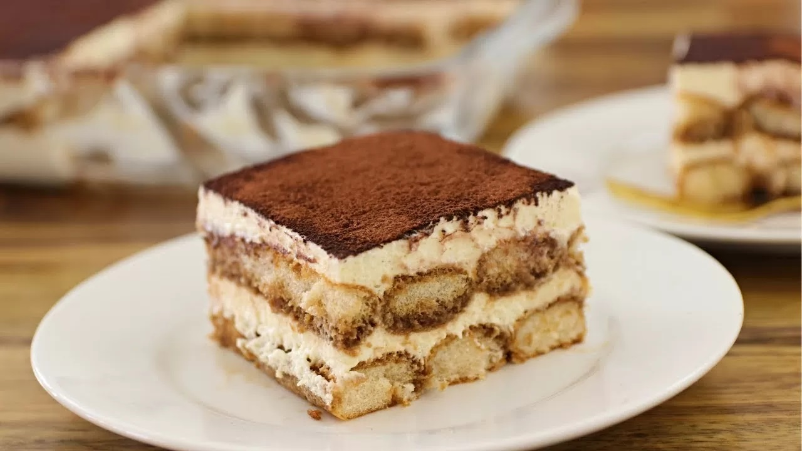

Receta Tiramisú
Ingredientes:
- Huevos - 4 unidades
- Queso mascarpone - 250 gramos
- Azúcar - 6 cucharadas
- Amaretto - 4 cucharadas
- Vainillas - 200 gramos
- Café - 500 mililitros
- Cacao puro - para espolvorear
Modo de preparación:
- Unas horas antes, o el día anterior, preparamos el café y lo dejamos enfriar antes de preparar la receta.
- Añadimos el azúcar al cuenco. Batimos con el accesorio de varillas de la batidora eléctrica hasta que el azúcar se disuelva.
- Cascamos los huevos y separamos las claras de la yemas. Ponemos las claras en el vaso de la batidora eléctrica y las reservamos en la nevera. Las yemas las echamos en un cuenco.
- A continuación, incorporamos el queso mascarpone y la mitad del licor Amaretto. Continuamos batiendo para que ambos ingredientes se incorporen a la mezcla. Montamos las claras a punto de nieve.
- Incorporamos las claras al cuenco. Con la ayuda de una espátula, mezclamos llevando a cabo movimientos envolventes que persiguen que las claras conserven la mayor cantidad de aire otorgando así a la mezcla una textura ligera y esponjosa.
- Mezclamos el resto del licor con el café. Vertemos un poco de café en un recipiente holgado.
- Introducimos las vainillas y las mojamos por ambos lados. No debemos empaparlas en exceso, ya que corremos el riesgo de que se rompan.
- Una vez que han absorbido un poco de café, las escurrimos, presionándolas con suavidad, y las ponemos sobre la base de una fuente.
- Una vez que tenemos la base cubierta con vainillas, extendemos sobre ellas la mitad de la crema con la ayuda de una espátula.
- Seguidamente, ponemos otra capa de vainillas remojadas en café. Ahora, extendemos el resto de crema. Finalizamos nuestro postre espolvoreando una fina capa de cacao puro en polvo.
